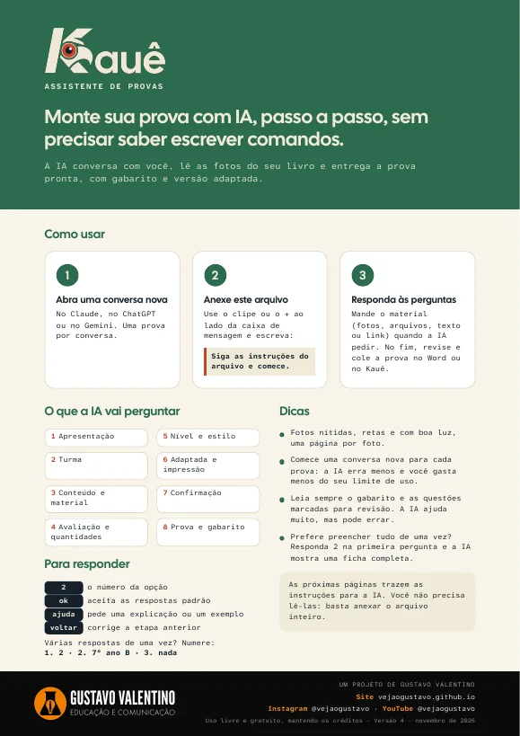

Provas prontas, versões contra cola e correção pelo código.
O Kauê ajuda o professor a montar provas com inteligência artificial, imprimir versões embaralhadas com gabarito e corrigir digitando o código da folha. A nota vai direto para a planilha da turma. Funciona no computador e no celular, mesmo sem internet.
Sem cadastro e sem senha. Suas provas e notas ficam no seu aparelho.
Como funciona
Do livro à nota em quatro passos. O tutorial completo mostra cada tela.
- 1
Monte com a IA
Anexe o Assistente de Provas numa conversa com o Claude, o ChatGPT ou o Gemini. A IA pergunta a turma, o conteúdo e os tipos de questão, lê as fotos do livro e entrega a prova com gabarito.
- 2
Cole no Kauê
O app confere a prova, aponta qualquer erro com o número da linha e mostra a prévia com as respostas certas.
- 3
Imprima as versões
Versões A, B, C e D com alternativas embaralhadas, mais a versão adaptada. Cada uma com cabeçalho da escola, código e gabarito, em PDF ou Word.
- 4
Corrija pelo código
Digite o código da folha, toque nas respostas do aluno e salve. A nota vai para a planilha da turma, por trimestre ou bimestre.
O que o Kauê faz por você
Versões contra cola
Até quatro versões da mesma prova, com a ordem das alternativas trocada. O gabarito de cada uma sai pronto.
Versão adaptada
Uma coluna, letra maior, menos alternativas e enunciados mais curtos, para quem precisa. A nota é convertida para a escala da prova.
Correção sem câmera
Digite o código e marque as respostas, ou digite as letras das múltiplas de uma vez. O último dígito do código evita lançar nota na versão errada.
Discursivas com apoio
Na correção, o Kauê mostra a resposta esperada, as variações que também valem e os critérios de nota cheia e de meio ponto.
Planilha da turma
Um aluno por linha, uma avaliação por coluna, uma aba por período e o resumo do ano. Notas de trabalhos e outras avaliações entram à mão.
Excel, PDF e imagem
As notas saem em Excel para a secretaria, em PDF para arquivar e em imagem para mandar no grupo, difícil de alterar.
Cabeçalho da escola
Campos com nome e logo, a faixa pronta da escola com o título por cima, ou um espaço em branco para o papel timbrado.
Computador e celular
Funciona offline e sem cadastro. Para usar mais de um aparelho, o Kauê leva um arquivo e junta as notas, com o nome do aparelho e a hora de cada uma.

Assistente de Provas
Um arquivo que transforma a IA numa entrevistadora paciente. Ela faz as perguntas em 8 etapas, lê as fotos do material e só escreve a prova depois que você confirma a ficha. Funciona no Claude, no ChatGPT e no Gemini, e serve também para quem ainda não usa o app: a prova sai pronta para colar no Word.
- Abra uma conversa nova na IA.
- Anexe o PDF e escreva: Siga as instruções do arquivo e comece.
- Responda às perguntas e revise a prova no fim.
Uso livre e gratuito, mantendo os créditos.
Para onde o Kauê pode ir
O Kauê nasceu na sala de aula, para resolver o trabalho de um professor. O que vem depois depende de quem testar. Algumas ideias em estudo:
- Banco de questões para reaproveitar o que já funcionou em outras turmas e anos.
- Relatórios por questão: quais itens a turma mais errou, para retomar o conteúdo.
- Kauê para escolas: cabeçalhos padronizados, professores da mesma escola e compartilhamento com a coordenação.
- Backup na nuvem, para não depender de levar arquivos de um aparelho para outro.
Teste e conte o que achou
O Kauê está em fase de testes com um grupo pequeno de professores, de várias disciplinas. É gratuito. Se você usar, mande o seu retorno: o que ajudou, o que travou e o que faltou.